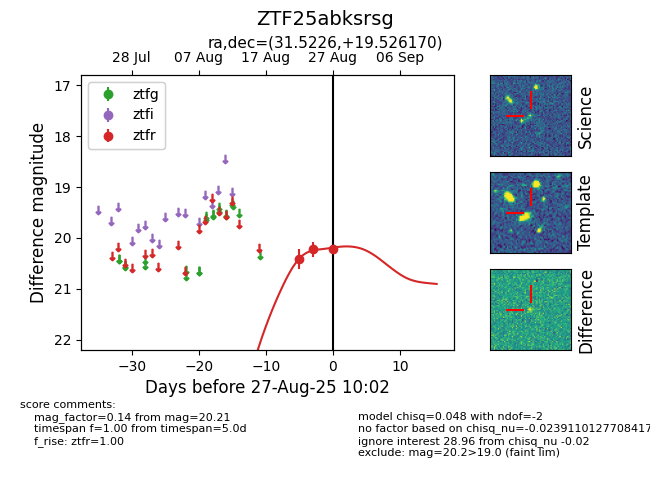

Target ZTF25abksrsg at 2025-08-27 10:02, see:
FINK: fink-portal.org/ZTF25abksrsg
Lasair: lasair-ztf.lsst.ac.uk/objects/ZTF25abksrsg
ALeRCE: alerce.online/object/ZTF25abksrsg
alt names
ZTF25abksrsg (ztf,fink)
coordinates:
equatorial (ra, dec) = (31.5226,+19.52617)
galactic (l, b) = (146.1041,-39.96277)
photometry
last ztfr=20.21
3 ztfr detections
